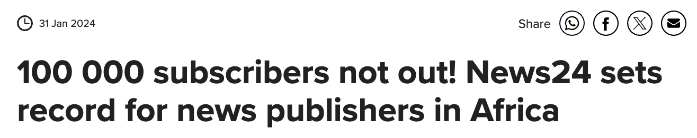
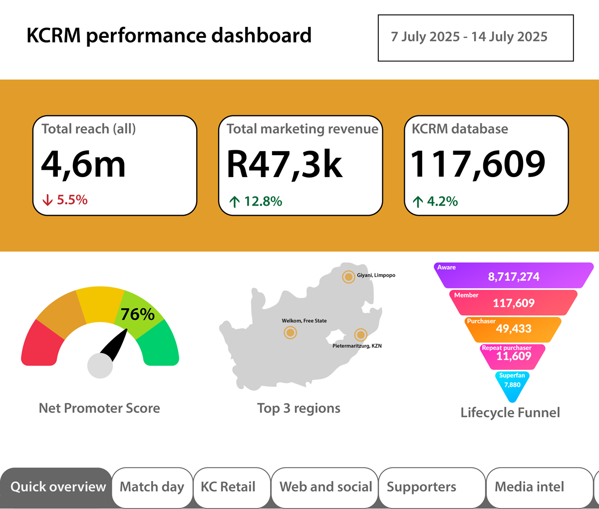
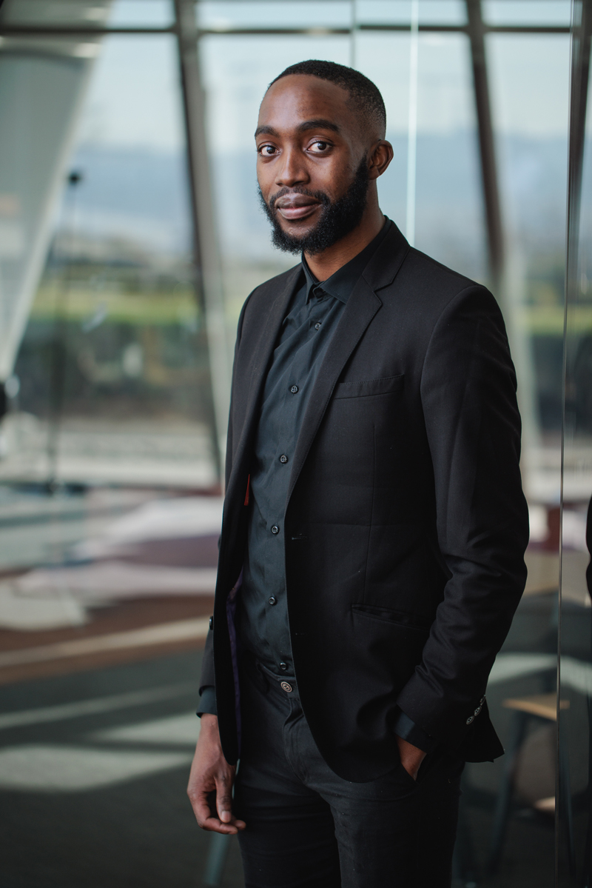

A few moments and projects from the last few years I'm proud of.
This project was an acquisition campaign incentivising News24 readers to subscribe on a multi-period billing option, which had relatively low uptake beforehand.
Upon subscription, they would receive an email with the promised spin of the wheel. Prizes included load-shedding themed prizes such as portable power stations, torches, & UPSs. The campaign which ran for less than a week yielded over 60 subscriptions on multi-period plans.
My role involved campaugn messaging, reporting, and configuring the CRM tool's workflows to trigger eligible recipients.
Ahead of the international rugby season for the Springboks and the first time being seen on the pitch since winning the Webb Ellis Trophy just months prior, I developed this game to connect Springbok fans to current stars and legends from the past
Similar to Wordle, this is a once a day game where the Bok of the Day is a hidden character that fans must decipher with the clues given to them.
After many years of showcasing his fashion endeavours online, including the infamous daily social media gimmicks, Kaizer Chiefs legend Willard Katsande approached me to build an online store.
My involvement was quite steep as I was responsible for the store's development, integration with a payment gateway, loading and managing of inventory until the client was able to continue unassisted.
With his incredible reach, hundreds of orders were placed and tens of thousands of Rands were processed on the store.
After joining the News24 marketing team 18 months prior, I owned the CRM portion of our acquisition channels to increase subscribers by almost 100%.
I ran everything CRM from messaging, to promotions, retention campaigns, and analytics.
As part of the commercial team at Media24, our campaign Behind the Business Headlines, commissioned by Nedbank won gold at the 2022 WAN-IFRA Africa Awards.
I designed, developed, maintained, and curated the hub that hosted our content for the campaign. I also played a hand in editing of some podcasts in the campaign
My latest journey in marketing incorporates a lot more tech in being part of PwC South Africa's Digital Presence team. Among other things, I will be:
I joined News24’s subscriptions team on 50,000 paid subscriptions. We more than doubled to 110,000 by the end of my tenure.
My responsibilities were:
I was a member of the award-winning native advertising team Brand Studio 24 (now AdSpace Studio).
I produced multimedia content for campaigns that featured across News24 verticals, microsites, and social media.
My first job out of varsity. Had a splendid time doing a little bit of everything under the marketing sun.
I contributed to strategy and content on the Club’s digital and media platforms as well as offline marketing operations. Other facets of my role included being an end-to-end facilitator overseeing and monitoring digital campaigns, platform analytics, event coverage and ad hoc engagements.
Progress so far in the quest to become the Digital Overlord.
This Master’s in Digital Curation from UCT develops advanced, industry-relevant skills at the intersection of content, technology, and governance. It will empower me to lead digital preservation, manage research data, and innovate in fast-changing digital environments.
Why did I enrol for a full-time course knowing damn well I have a full-time job?
Since I’m destined for a life and afterlife in marketing, this was the best course.
My employer liked me so much they nominated me, and paid, for this course.
I successfully completed the University of Cape Town Web Design online short course, presented in collaboration with online education company, GetSmarter.
I gained practical and theoretical knowledge in website architecture, HTML, CSS and introduction to JavaScript.
This brought transferable learnings to my job. Great success! üëçüèæ
I enrolled just so I can play football for Wits, three years later I graduated in Media Studies and Organisational Psychology. ü§∑üèæ‚Äç‚ôÇÔ∏è
Email: mikatekosan@gmail.com
Phone: +27 78 986 3151
LinkedIn: linkedin.com/in/mikateko
Website: mikateko.co.za
Develop and maintain relationships in the industry
Forming alliances and getting an understand of industry trends would allow us to keep ahead of the curve and be a priority contact when major shifts occur.
Keeping ears and eyes out on workshops in a bid to be nimble and adopting new best practices swiftly.
Solid tech stack
Unify the various incumbent marketing technology solutions to achieve peak integration would be a key objective.
Achieving this harmony ensures tools can work together without having to resort to yet another tool or clunky custom integrations.
Business case development
Identifying the functional requirements of the club, and gauging against the solutions to decide whether they belong in the tech stack or not.
From the functional requirements, we can explore the solutions that would meet the requirements for the future and integrate them into the existing marketing technology stack.
Develop business cases for prospective technologies and evaluate the value it would bring back to the Club.
Push tools to their limits
So often we find ourselves using 20% of the tools 80% of the time. A goal would be to use 100% of the tools available 100% of the time.
This ensures budget is well spent and sensibly.
Data is the unseen playmaker in the modern game. When harnessed correctly, that data is transformed into information. As well all know, information is power.
Everything that can be measured will be tagged, analysed, and tracked to empower decision making.
An objective I plan to implement is detailed and informative dashboards that speak to the different areas of the Club. Every decision can be layered with the qualitative knowledge of the team and that of the quantitative data.
From the website and e-commerce efforts, to matchday and supporters/branch information, the dashboards I will develop will provide the Club’s board and leadership with a wider view of the day-to-day goings on.
On a quarterly basis, high-level interactive dashboards are prepared for the board, and historical trends and patterns can be analysed and unpacked.
Given the costly nature of business, it is imperative that every cent leaving counts and that every cent coming in is welcome.
Using existing properties, revenue can be sought to minimise the red on the balance sheet.
Website
Our website brings in traffic but no dynamic ads run on it. Why?
Well, you don’t want MTN or Suzuki flighting ads on the website when Vodacom and Toyota are your sponsors. And you don’t want to ruin the user experience for fans connecting with their favourite club.
That’s fair, but also consider that the club does have partners that don’t get much more exposure than the logo on the website or the playing kit.
Ads that don't pop-up and shift the layout of the page maintain the user experience. This ad above is an example of a collapsible ad unit on the Kaizer Chiefs homepage, where it will get hundreds of thousands of eyeballs and will be controlled via the Google Marketing Platform's tools to be ads only pre-approved by the Club's managment. This kind of exposure will be tantalizing for partners and yield results because of the possessing the most brand-safe environment. There are no wasted ad dollars (or Rands if you will) here because of the audience.
Existing Kaizer Chiefs partners running ads on the website also addresses the user experience. Fans won’t be irritated given that these ads would be relevant and somewhat consensual as they already buy into the club and all its partners.
The above ad mock-up is sitting within the current build of the website, not intrusive, and still takes up prime real estate.
When not running ads for partners, there is further opportunity comes to flight ads and drive back to KC properties such as the KC DigiStore, KC Radio, the WhatsApp channel and KC Mobile.
Membership
This item is addressed in more detail in the KCRM section of the manifesto.
Membership is not a new conversation, the right time and the right implementation need to marry.
It’s time for that marriage as the opportunity is ripe.
Cost minimisation
Lending from the Marketing technology manifesto item, cost minimisation would come from looking at tools that can be dropped especially in areas of overlap. It’s also worth looking at what can be sustainably and efficiently done in-house and hoe much value is derived from existing tools.
Even the few clubs older than Kaizer Chiefs aren’t as storied as the Glamour Boys.
Using the various channels available, content will continue being an essential vessel to tell stories of today and of the years gone by.
Understanding that various supporters romanticise their favourite eras, it’s important to tell those stories through different channels such as KC Radio, social media, website and YouTube. It is also key to cultivate the stories of the legends of tomorrow.
Content engine
Nobody tells our stories better than us.
To maintain and grow our stature as one of Africa’s most iconic clubs, Kaizer Chiefs needs a content engine that never sleeps. A system that is agile, strategic, and deeply in tune with our culture and the pulse of our supporters. This means developing an always-on content calendar, driven by key club moments, historical anniversaries, transfer activity, match build-ups, and behind-the-scenes exclusives.
The engine will run on collaboration – from media teams and technical staff to players and legends. It also means segmenting content by platform; each platform will get something different in order to keep it 360°. Snackable reels for Instagram, tactical videos with legends and longer interviews on YouTube, in-depth editorial on the website, and community-led storytelling on X and KC Radio.
Above all, the engine will be designed to feed our loyal supporters with a mix of nostalgia, news, and narrative. It must celebrate our legacy while always looking forward. It must entertain. It must inform. It must inspire.
Match day
A match day programme, digital of course, that would allow the Club to entertain, educate, and inform supporters ahead of the home games would be on the cards.
Ideally released a day or two before a home game, it blends content already done on the website such as interviews, previews, analysis and packages them in an aesthetically pleasing editorial format.
It’s a last push to grab tickets and whets the appetite for those who already have tickets.
Video
Introduction of content pieces of various lengths, styles, and locations to keep the content bank full and feeding the ever-hungry supporters asking Admin, “where’s Frosler?” (Or any other player really, it just depends on the day).
Oh, one more thing. It’s time to enter the Tik-Tok race.
As the overwhelmingly most-followed club in South Africa, Kaizer Chiefs has huge numbers across various platforms.
Despite boasting millions of followers across the various channels, few of them are truly owned media. Remember the platform Google+ and the Club’s following in the hundreds of thousands? They’re nowhere to be counted now, probably assumed as following one of the current platforms such as Facebook and X. One day Facebook and X will follow MySpace and Google+ into oblivion.
A goal would be to bring those supporters over to truly owned media platforms such as the website, KC Radio, and in the very near future a (proper) mobile app.
Together we can account for these supporters and offer them a distinct offering that makes the truly owned media channels more appealing.
Kaizer Chiefs Relationship Management (KCRM) is where the manifesto items all come together to create the next unique offering — the new and improved membership programme. But it’s more than just a membership — it’s the source of everything.
KCRM is the engine behind that connects the Club to its supporters and creates conditions to understand and manage the relationship.
Leading back to the manifesto item on marketing technology, the much anticipated membership programme is a key objective and will be made possible by the correct infrastructure and partnerships. This will be the backbone of the membership programme.
I introduce to you the KC ID, a unified way of understanding Kaizer Chiefs supporters no matter what platform or avenue they connect with the club.
The full view
We’ll put ourselves in a position to know in extreme detail where supporters are based, which branches they represent, the amount of matches they watch, the merchandise they purchase, their activity on the website, and determine how the offering can be tailored to suit them.
What other data points? The world is our oyster. As long as it is measurable, we can include more data points that answer questions such as:
The advantage is the longer the data is collected and analysed, it enables prediction and forecasting.
Digital first
After spending the last few years with different CRM tools, a digital-first approach to this will allow the Club to have a 360-degree view of their supporters from the stadium, to the website, to the physical stores, and the KC DigiStore.
Monetisation opportunities
Memberships are both inclusive and exclusive. A free option enables all supporters in the door, but an exclusive membership unlocks promotions, access to competitions, early access to tickets so they never miss out on massive clashes. The pricing model works in perks such as potentially financing the next season’s jersey.
A little bit of the journey so far.
